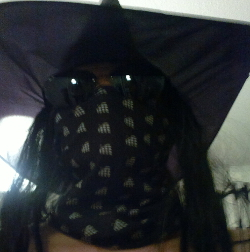
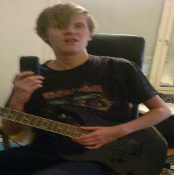
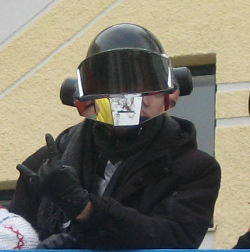

Our Band
Destinated to play it rough!
| 
"Wizard" Michael Barrington - keyboards |

"Jazsty" John Horrid - guitar |

"Shady" Zachary La Vila - vocals, guitar |

"Lad" Robert Långson - drums |

"Gruul" Gilbert Daniels - bass |
Not long ago, five warriors were given a heroic task. Wielding instruments equaling their own melodical powers, here they stand. Behold, the Melodical Power of Sarcastic Front!
Sarcastic Front was found on summer 2013 by five youngsters with a desire to play melodic heavy metal. In mere a year and a half, they've released an album, an extended play and a single and are looking forward to hitting charts in their home country with their newest release, Ambiance.
They are known for their wild and laid-back live performances, as well as for hard-working attitude in recording studio. Also very delightful people to hang out with, they tend to do pranks to each other and are always excited to have new people to tell jokes and screw around.
Be sure to ask their autographs when meeting, that's how they know they've done something right!